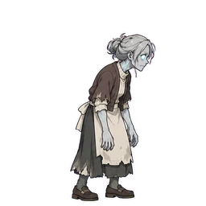

Abitante dall'udito fine
Zombie
Panoramica
| HP (come scritto) | 20 |
|---|---|
| Frequenza di attacco | x0.83 |
| Velocità | Normale |
| Movimento | Terra |
| Comportamento | Insegue l'eroina |
| Nota la distanza | 6 celle |
| Appare su | Fase 33 - Fase 50 |
| Terreno extra | Nessuno |
| Tratti |
|
Trappole che non funzionano su di essa
Deriva solo dai dati delle trappole (tipo di movimento, tratti da ignorare e immunità alla famiglia nemica). Le regole speciali dei boss e i livelli delle trappole non vengono considerati.
| Trappola | Motivo |
|---|---|
| Funziona solo su determinate famiglie nemiche o tipi di movimento | |
| Funziona solo su determinate famiglie nemiche o tipi di movimento | |
| Non può prendere di mira i nemici Terra | |
| Non può prendere di mira i nemici Terra | |
| Funziona solo su determinate famiglie nemiche o tipi di movimento |